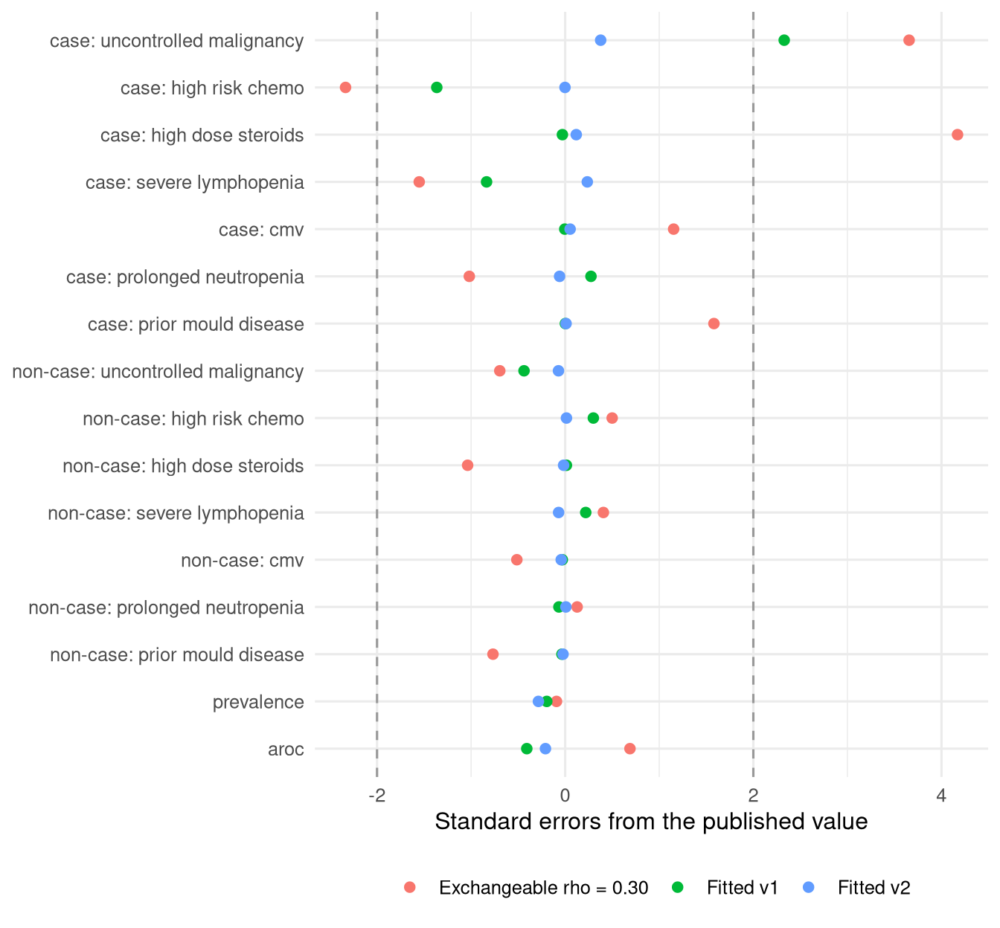
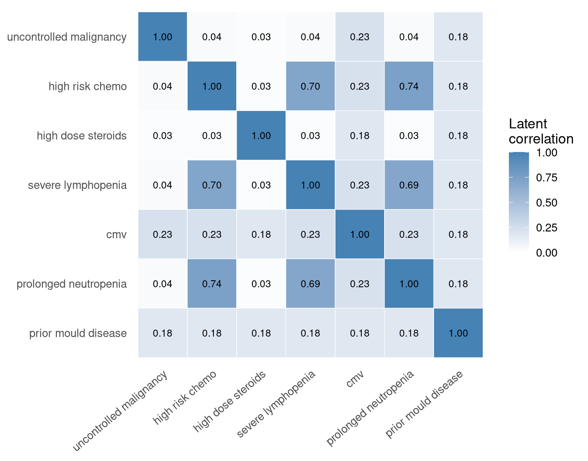
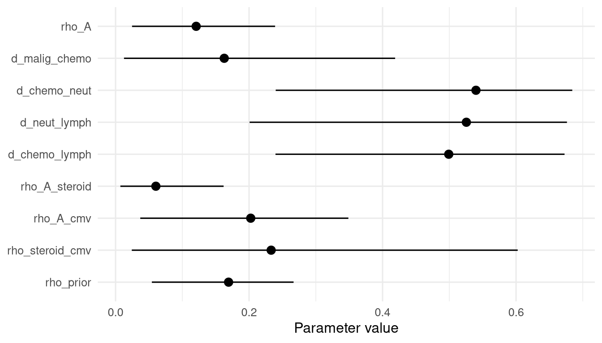

Code
source("_setup.R")
rep <- read.csv("output/reproduction_report.csv")
loss <- read.csv("output/reproduction_loss.csv")
cmp <- read.csv("output/fit_comparison.csv")The fixed clinical equation and its fitted predictor correlation
October 18, 2026
The real joint distribution of the predictors became available after the lock, and the copula turned out to be 10% of probability mass away from it. Since decisions D8, D9 and D10 (18 October 2026) the baseline cohort is the observed distribution of the 128 profiles in the 4,078 unique admissions of boscore.xlsx, the baseline model is a refit on it (next section), and everything else on this page describes the published equation and the copula that are kept as sensitivity analyses. See the comparison with the real data.
The baseline model is a maximum-likelihood logistic refit of the seven predictors on the 4,078 unique admissions in 1,945 patients. It is fixed from here on, and genetic terms will be fitted on top of it. Standard errors are clustered by patient, and the bootstrap resamples patients and repeats the refit in every resample.
rp <- read.csv("output/baseline_refit_parameters.csv")
rp |>
transmute(Term = gsub("_", " ", term), Published = published, Refit = refit, `Robust SE` = se_robust,
`Bootstrap 5%` = lo, `Bootstrap 95%` = hi, `Odds ratio` = ifelse(term == "(Intercept)", NA, odds_ratio)) |>
gt() |>
fmt_number(2:6, decimals = 2) |>
fmt_number(7, decimals = 2) |>
sub_missing(missing_text = "")| Term | Published | Refit | Robust SE | Bootstrap 5% | Bootstrap 95% | Odds ratio |
|---|---|---|---|---|---|---|
| (Intercept) | −5.45 | −5.59 | 0.27 | −6.13 | −5.22 | |
| uncontrolled malignancy | 0.68 | 0.76 | 0.20 | 0.44 | 1.11 | 2.15 |
| high risk chemo | 0.79 | 0.86 | 0.24 | 0.49 | 1.26 | 2.37 |
| high dose steroids | 0.80 | 0.80 | 0.25 | 0.34 | 1.20 | 2.23 |
| severe lymphopenia | 0.89 | 0.93 | 0.23 | 0.56 | 1.32 | 2.54 |
| cmv | 1.14 | 1.42 | 0.32 | 0.85 | 1.96 | 4.14 |
| prolonged neutropenia | 1.52 | 1.58 | 0.29 | 1.13 | 2.10 | 4.83 |
| prior mould disease | 1.64 | 1.99 | 0.28 | 1.50 | 2.47 | 7.28 |
| Metric | Apparent | Optimism | Corrected |
|---|---|---|---|
| aROC | 0.8577 | 0.0046 | 0.8531 |
| calibration slope | 1.0000 | 0.0288 | 0.9712 |
| mean predicted risk | 0.0326 | 0.0000 | 0.0326 |
| observed prevalence | 0.0326 | 0.0000 | 0.0326 |
| observed net benefit at 5% | 0.0152 | 0.0005 | 0.0148 |
| observed net benefit at 10% | 0.0086 | 0.0007 | 0.0079 |
| observed net benefit at 20% | 0.0040 | 0.0007 | 0.0033 |
The refit is calibrated in the large by construction, and the optimism is small: aROC falls from 0.858 to 0.853 and the calibration slope is 0.97. The published equation is kept as a sensitivity analysis, described in the rest of this page.
This is the Stanzani et al. (2019) equation. Until decision D10 it was the fixed clinical block.
\[ \operatorname{logit}(p) = -5.45 + 0.68\,\text{malignancy} + 0.79\,\text{chemo} + 0.80\,\text{steroids} + 0.89\,\text{lymphopenia} + 1.14\,\text{CMV} + 1.52\,\text{neutropenia} + 1.64\,\text{prior mould} \]
Exponentiating each coefficient reproduces the published adjusted odds ratios in Table 2.
data.frame(
Predictor = gsub("_", " ", PREDICTORS),
Coefficient = pars$coef[PREDICTORS],
`Odds ratio` = exp(pars$coef[PREDICTORS]),
`In cases` = pars$prev_case[PREDICTORS],
`In non-cases` = pars$prev_non[PREDICTORS],
Overall = pars$marginal[PREDICTORS],
check.names = FALSE
) |>
gt() |>
fmt_number(2:3, decimals = 2) |>
fmt_percent(4:6, decimals = 1)| Predictor | Coefficient | Odds ratio | In cases | In non-cases | Overall |
|---|---|---|---|---|---|
| uncontrolled malignancy | 0.68 | 1.97 | 58.7% | 40.6% | 41.2% |
| high risk chemo | 0.79 | 2.20 | 63.9% | 19.4% | 20.9% |
| high dose steroids | 0.80 | 2.23 | 22.6% | 10.9% | 11.3% |
| severe lymphopenia | 0.89 | 2.44 | 48.9% | 11.6% | 12.8% |
| cmv | 1.14 | 3.13 | 12.8% | 2.4% | 2.7% |
| prolonged neutropenia | 1.52 | 4.57 | 79.7% | 27.5% | 29.2% |
| prior mould disease | 1.64 | 5.16 | 15.0% | 2.2% | 2.6% |
A synthetic cohort must reproduce 16 published targets: the IMD prevalence, the aROC, and the prevalence of each predictor separately in cases and non-cases. The paper does not publish the joint distribution of the seven predictors, and it is load-bearing. High-risk chemotherapy and prolonged neutropenia, for example, are close to the same clinical state and cannot be drawn independently.
I model the joint with a Gaussian copula: each predictor is a thresholded latent normal variable that keeps its published marginal prevalence, and the correlation of the latent variables is the assumption to be calibrated. Because the predictors are binary, every quantity of interest is a function of the 128 predictor profiles. The profile probabilities are computed by numerical integration of the 7-dimensional normal, so no patient-level sampling enters the results below.
g <- rep[rep$target %in% c("prevalence", "aroc"), ]
ch <- setNames(loss$chi2, loss$model)
pct <- function(x) sprintf("%.2f%%", 100 * x)
tibble(
Quantity = c("IMD prevalence", "aROC", "Chi-square, 16 targets"),
Published = c(sprintf("%.1f%%", 100 * g$published[1]), sprintf("%.3f", g$published[2]), "0"),
Independence = c(pct(g$independent[1]), sprintf("%.3f", g$independent[2]), sprintf("%.0f", ch[["independent"]])),
`Exchangeable rho = 0.30` = c(pct(g$exchangeable_0.30[1]), sprintf("%.3f", g$exchangeable_0.30[2]),
sprintf("%.0f", ch[["exchangeable_0.30"]])),
`Fitted v1` = c(pct(g$fitted_v1[1]), sprintf("%.3f", g$fitted_v1[2]), sprintf("%.1f", ch[["fitted_v1"]])),
`Fitted v2` = c(pct(g$fitted[1]), sprintf("%.3f", g$fitted[2]), sprintf("%.2f", ch[["fitted"]]))
) |> gt()| Quantity | Published | Independence | Exchangeable rho = 0.30 | Fitted v1 | Fitted v2 |
|---|---|---|---|---|---|
| IMD prevalence | 3.3% | 2.24% | 3.27% | 3.25% | 3.22% |
| aROC | 0.850 | 0.775 | 0.854 | 0.848 | 0.849 |
| Chi-square, 16 targets | 0 | 346 | 47 | 8.6 | 0.36 |
133 of 4,127 admissions is 3.22%, not 3.3%. The 3.3% figure was kept as pre-specified (decision D6). The difference is about 0.3 standard errors and does not affect the fit.
Independence gives the right per-predictor prevalences by construction but a prevalence of 2.2% and an aROC of 0.775. A single exchangeable correlation of 0.30 recovers both global targets but misses several case-group prevalences. The structured fits do better on both counts.
lab <- gsub("_", " ", sub("^noncase_prev:", "non-case: ", sub("^case_prev:", "case: ", rep$target)))
rep |>
transmute(target = factor(lab, levels = rev(lab)),
`Exchangeable rho = 0.30` = z_exchangeable, `Fitted v1` = z_fitted_v1, `Fitted v2` = z_fitted) |>
pivot_longer(-target, names_to = "model", values_to = "z") |>
mutate(model = factor(model, c("Exchangeable rho = 0.30", "Fitted v1", "Fitted v2"))) |>
ggplot(aes(z, target, colour = model)) +
geom_vline(xintercept = c(-2, 2), linetype = "dashed", colour = "grey60") +
geom_point(size = 2) +
labs(x = "Standard errors from the published value", y = NULL, colour = NULL) +
theme(legend.position = "bottom")
The matrix is structured by clinical grouping, with non-negative dependence. The marrow-suppression block (malignancy, chemotherapy, lymphopenia, neutropenia) shares a baseline correlation, with extra correlation allowed for the pairs that the requested Bologna cross-tabulations would cover. Steroids, CMV and prior mould disease are tied to the block by single parameters.
Version 1 had eight parameters. It left uncontrolled malignancy in cases simulated at 69% against 59% published (2.3 standard errors), and two block parameters sat at their upper bound. Both problems had one cause. Neutropenia is tightly tied to both chemotherapy and lymphopenia, which forces chemotherapy and lymphopenia to be correlated for the matrix to stay positive definite. In version 1 that pair shared the block baseline with malignancy’s links, so raising the baseline to satisfy the first pulled malignancy up with it.
Version 2 gives chemotherapy-lymphopenia its own parameter and lets the three block extras reach 0.7.
cmp |>
transmute(
Model = recode(config,
v1 = "v1: 8 parameters, extras capped at 0.5",
v2_capped = "v2 with the v1 caps (9 parameters)",
v2 = "v2: 9 parameters, extras capped at 0.7"),
`Chi-square` = chi2, Prevalence = prevalence, aROC = auc,
`Malignancy in cases (z)` = z_malignancy_case, `Largest |z|` = max_abs_z,
`At a bound` = gsub("; ", ", ", at_bound)
) |>
gt() |>
fmt_number(c(`Chi-square`, `Malignancy in cases (z)`, `Largest |z|`), decimals = 2) |>
fmt_percent(Prevalence, decimals = 2) |>
fmt_number(aROC, decimals = 3)| Model | Chi-square | Prevalence | aROC | Malignancy in cases (z) | Largest |z| | At a bound |
|---|---|---|---|---|---|---|
| v1: 8 parameters, extras capped at 0.5 | 8.60 | 3.25% | 0.848 | 2.33 | 2.33 | d_malig_chemo, d_chemo_neut, d_neut_lymph |
| v2 with the v1 caps (9 parameters) | 2.74 | 3.21% | 0.849 | 1.44 | 1.44 | d_malig_chemo, d_chemo_neut, d_neut_lymph, d_chemo_lymph |
| v2: 9 parameters, extras capped at 0.7 | 0.36 | 3.22% | 0.849 | 0.38 | 0.38 | d_malig_chemo, d_chemo_neut |
The malignancy residual goes away (2.3 to 0.4 standard errors). The new parameter alone, with the old caps, gets most of the way (1.4); raising the caps finishes it.
Rm <- as.matrix(read.csv("output/fitted_correlation_matrix.csv", row.names = 1))
nm <- gsub("_", " ", rownames(Rm))
long <- expand.grid(row = nm, col = nm)
long$r <- as.vector(Rm)
ggplot(long, aes(col, row, fill = r)) +
geom_tile(colour = "white") +
geom_text(aes(label = sprintf("%.2f", r)), size = 3) +
scale_fill_gradient(low = "white", high = "steelblue", limits = c(0, 1)) +
scale_y_discrete(limits = rev(nm)) +
labs(x = NULL, y = NULL, fill = "Latent\ncorrelation") +
theme(axis.text.x = element_text(angle = 40, hjust = 1), panel.grid = element_blank())
meaning <- c(
"Baseline correlation within the marrow-suppression block (this sets malignancy's links)",
"Extra: malignancy and chemotherapy",
"Extra: chemotherapy and neutropenia",
"Extra: neutropenia and lymphopenia",
"Extra: chemotherapy and lymphopenia (new in v2)",
"Block with high-dose steroids",
"Block with CMV",
"Steroids with CMV",
"Prior mould disease with every other predictor"
)
th <- read.csv("output/fitted_theta.csv")
th$lower <- THETA_LOWER[th$parameter]
th$upper <- THETA_UPPER[th$parameter]
th$bound <- ifelse(abs(th$value - th$lower) < 0.01, "at lower bound",
ifelse(abs(th$value - th$upper) < 0.01, "at upper bound", ""))
th$meaning <- meaning
th |>
select(Parameter = parameter, Meaning = meaning, Value = value, Lower = lower, Upper = upper, Note = bound) |>
gt() |>
fmt_number(c(Value, Lower, Upper), decimals = 2)| Parameter | Meaning | Value | Lower | Upper | Note |
|---|---|---|---|---|---|
| rho_A | Baseline correlation within the marrow-suppression block (this sets malignancy's links) | 0.04 | 0.00 | 0.80 | |
| d_malig_chemo | Extra: malignancy and chemotherapy | 0.00 | 0.00 | 0.50 | at lower bound |
| d_chemo_neut | Extra: chemotherapy and neutropenia | 0.70 | 0.00 | 0.70 | at upper bound |
| d_neut_lymph | Extra: neutropenia and lymphopenia | 0.66 | 0.00 | 0.70 | |
| d_chemo_lymph | Extra: chemotherapy and lymphopenia (new in v2) | 0.67 | 0.00 | 0.70 | |
| rho_A_steroid | Block with high-dose steroids | 0.03 | 0.00 | 0.80 | |
| rho_A_cmv | Block with CMV | 0.23 | 0.00 | 0.80 | |
| rho_steroid_cmv | Steroids with CMV | 0.18 | 0.00 | 0.80 | |
| rho_prior | Prior mould disease with every other predictor | 0.18 | 0.00 | 0.50 |
Malignancy is almost uncorrelated with the other block members (latent correlation about 0.04), while chemotherapy, neutropenia and lymphopenia are correlated at 0.69 to 0.74 with each other. That is what the published figures imply under this structure. It should be checked against the requested Bologna cross-tabulation of malignancy by chemotherapy.
d_chemo_neut sits at its upper bound of 0.7. Moving it away from the fitted value, with every other parameter held, shows whether the bound is binding.
set.seed(7461)
Zs <- matrix(rnorm(3e5 * 7), 3e5)
obj <- make_objective(Zs, pars, targets)
th_fit <- setNames(th$value, th$parameter)[THETA_NAMES]
vals <- c(0.5, 0.6, 0.7, 0.8, 0.9)
tibble(`d_chemo_neut` = vals,
`Latent chemo-neutropenia correlation` = th_fit[["rho_A"]] + vals,
Loss = sapply(vals, \(v) obj(replace(th_fit, "d_chemo_neut", v)))) |>
gt() |>
fmt_number(c(`Latent chemo-neutropenia correlation`, Loss), decimals = 2)| d_chemo_neut | Latent chemo-neutropenia correlation | Loss |
|---|---|---|
| 0.5 | 0.54 | 3.73 |
| 0.6 | 0.64 | 1.61 |
| 0.7 | 0.74 | 0.54 |
| 0.8 | 0.84 | 0.98 |
| 0.9 | 0.94 | 3.52 |
The loss is lowest at 0.7 and rises on both sides, so the optimum is at the cap by coincidence and the cap is not constraining the fit. The matrix is also well inside the positive-definite region (smallest eigenvalue 0.26), so positive definiteness no longer limits the fit either.
The 16 targets are not independent. Given the marginals, the non-case prevalences follow from the case prevalences and the overall prevalence, which leaves about nine effective constraints. Version 2 has nine parameters. A saturated fit reproduces its targets almost exactly whether or not the structure is right. Only information beyond the published margins, such as the Bologna cross-tabulations, can test it.
Many matrices fit the targets about equally well. A random-walk Metropolis sampler on \(\exp(-\chi^2/2)\) gives an ensemble of near-optimal matrices (six chains, 400 retained draws each after thinning). It is not a formal posterior: the chi-square uses published sampling errors and ignores admission clustering.
raw <- read.csv("output/correlation_ensemble_raw.csv")
rhat <- function(x, chain) {
s <- split(x, chain); n <- length(s[[1]])
W <- mean(sapply(s, var)); B <- n * var(sapply(s, mean))
sqrt(((n - 1) / n * W + B / n) / W)
}
summ <- tibble(
parameter = THETA_NAMES,
q05 = sapply(THETA_NAMES, \(p) quantile(raw[[p]], 0.05)),
median = sapply(THETA_NAMES, \(p) median(raw[[p]])),
q95 = sapply(THETA_NAMES, \(p) quantile(raw[[p]], 0.95)),
rhat = sapply(THETA_NAMES, \(p) rhat(raw[[p]], raw$chain))
)
ggplot(summ, aes(median, factor(parameter, rev(THETA_NAMES)))) +
geom_pointrange(aes(xmin = q05, xmax = q95)) +
labs(x = "Parameter value", y = NULL)
| Parameter | 5% | Median | 95% | R-hat |
|---|---|---|---|---|
| rho_A | 0.02 | 0.12 | 0.24 | 1.02 |
| d_malig_chemo | 0.01 | 0.16 | 0.42 | 1.03 |
| d_chemo_neut | 0.24 | 0.54 | 0.68 | 1.02 |
| d_neut_lymph | 0.20 | 0.53 | 0.68 | 1.04 |
| d_chemo_lymph | 0.24 | 0.50 | 0.67 | 1.09 |
| rho_A_steroid | 0.01 | 0.06 | 0.16 | 1.00 |
| rho_A_cmv | 0.04 | 0.20 | 0.35 | 1.02 |
| rho_steroid_cmv | 0.02 | 0.23 | 0.60 | 1.06 |
| rho_prior | 0.05 | 0.17 | 0.27 | 1.00 |
The ranges are wide, particularly for the steroid-CMV correlation and the malignancy-chemotherapy extra. The chains mix acceptably (largest R-hat 1.09). The consequences of this spread for net benefit and the MCID are on the decision curves page.
The admission-level derivation data (4,127 admissions) reproduces the published Table 2 counts apart from two non-case counts that are one lower than published, and a refit recovers the published coefficients. Only 75 of the 128 profiles occur, and 35 of those in fewer than 5 admissions.
| Joint distribution | Distance from the data |
|---|---|
| Independence | 0.274 |
| Exchangeable, rho = 0.30 | 0.188 |
| Copula v2 | 0.098 |
The saturated copula fit is far closer than the simpler alternatives, but still misses about 10% of the probability mass. Several of its correlations are wrong, some in sign.
read.csv("output/empirical_vs_copula_correlations.csv") |>
arrange(desc(abs(difference))) |>
head(8) |>
transmute(`Predictor 1` = gsub("_", " ", predictor_1), `Predictor 2` = gsub("_", " ", predictor_2),
`In the data` = empirical_tetrachoric, `Fitted copula` = copula_v2, Difference = difference) |>
gt() |>
fmt_number(3:5, decimals = 2)| Predictor 1 | Predictor 2 | In the data | Fitted copula | Difference |
|---|---|---|---|---|
| uncontrolled malignancy | cmv | −0.15 | 0.23 | 0.38 |
| high dose steroids | severe lymphopenia | 0.33 | 0.03 | −0.30 |
| high dose steroids | prior mould disease | −0.10 | 0.18 | 0.28 |
| severe lymphopenia | cmv | 0.49 | 0.23 | −0.26 |
| uncontrolled malignancy | high dose steroids | 0.25 | 0.03 | −0.23 |
| uncontrolled malignancy | prolonged neutropenia | 0.18 | 0.04 | −0.15 |
| uncontrolled malignancy | prior mould disease | 0.05 | 0.18 | 0.13 |
| high risk chemo | prior mould disease | 0.32 | 0.18 | −0.13 |
Four of the 21 pairs are negative in the data, and the copula’s non-negativity constraint ruled that out. The malignancy-by-chemotherapy correlation that worried me turns out to be right (0.03 in the data against 0.04 fitted). The MCID barely moves between the two cohorts; the values are on the decision curves page.
The harness checks the fixed equation against the published odds ratios and counts, verifies the profile machinery against brute-force calculations, checks that numerical integration agrees with sampling and with itself across seeds, reproduces the documented independence and exchangeable results, tests the saved fit on fresh random draws, and tests the decision-curve code against hand calculations.
| File | Test | Expectations | Result |
|---|---|---|---|
| baseline | published coefficients reproduce the Table 2 adjusted odds ratios | 2 | pass |
| baseline | published prevalences agree with the published group counts | 4 | pass |
| baseline | validation targets load as published | 4 | pass |
| baseline | profile enumeration is complete and indexed consistently | 3 | pass |
| baseline | independent profile distribution is a proper distribution with the right margins | 2 | pass |
| baseline | grouped expected AUC equals brute-force pairwise AUC, including ties | 1 | pass |
| baseline | profile metrics satisfy the case / non-case mixture identity | 1 | pass |
| baseline | independence reproduces the documented 2.27% prevalence and aROC of 0.775 | 2 | pass |
| boscore-data | the BOSCORE columns map onto the right model predictors | 12 | pass |
| boscore-data | the inclusion rule is complete data on the seven items, and matches where pred is present | 3 | pass |
| boscore-data | twin pairs are found and the pattern check separates real twins from anything else | 6 | pass |
| boscore-data | the base cohort keeps the event row of every pair and drops only the twin | 8 | pass |
| boscore-data | row order does not decide which row of a pair is kept | 3 | pass |
| boscore-data | cohort_summary agrees with a hand calculation | 5 | pass |
| boscore-data | admissions per patient pools the top category | 3 | pass |
| boscore-data | resampling groups draws whole patients, with every admission of a drawn patient | 58 | pass |
| boscore-data | bootstrap_dca is reproducible and returns the documented columns | 4 | pass |
| boscore-data | resampling patients gives wider intervals than resampling admissions when admissions cluster | 1 | pass |
| boscore-data | reconciliation passes for a consistent bs file and fails for each kind of tampering | 8 | pass |
| boscore-data | the pseudonymised cohort carries no identifier, preserves structure and round-trips | 13 | pass |
| boscore-data | read_boscore fails clearly when the file or a needed column is missing | 1 | pass |
| boscore-data | the real boscore.xlsx reconciles with bs.xlsx exactly | 5 | pass |
| boscore-data | the real file has 49 twin pairs, and removing them gives 4,078 admissions with all 133 events | 7 | pass |
| boscore-data | the pseudonymised base cohort matches the identified file | 3 | pass |
| bs-data | auc_rank agrees with a brute-force pairwise AUC, including ties | 1 | pass |
| bs-data | count and refit checks return the expected shapes on synthetic data | 5 | pass |
| bs-data | synthetic counts do not match the documented differences, but constructed ones do | 4 | pass |
| bs-data | read_bs_data fails clearly when the file is absent | 1 | pass |
| bs-data | the derivation data reproduces the published counts, apart from the documented differences | 4 | pass |
| bs-data | a refit on the derivation data recovers the published coefficients and aROC | 3 | pass |
| bs-data | empirical profile counts add up and index the right profiles | 4 | pass |
| bs-data | tetrachoric recovers the latent correlation of simulated binary variables | 3 | pass |
| bs-data | the real derivation data has 4,127 admissions across 75 observed profiles | 2 | pass |
| copula | structured correlation matrix is valid and placed correctly | 12 | pass |
| copula | version 1 parameter vectors still build, with chemotherapy-lymphopenia at the baseline | 2 | pass |
| copula | parameter bounds are named consistently | 6 | pass |
| copula | a non-positive-definite matrix is rejected by the sampler | 1 | pass |
| copula | pd_adjust leaves valid matrices alone and repairs invalid ones continuously | 6 | pass |
| copula | the fitting objective is finite and continuous across the feasibility boundary | 4 | pass |
| copula | the copula preserves the published predictor margins | 2 | pass |
| copula | an identity latent matrix reproduces the independent distribution | 1 | pass |
| copula | exchangeable rho = 0.30 reproduces the documented 3.3% prevalence and aROC of 0.85 | 2 | pass |
| copula | numerical integration reproduces the independent distribution and agrees with sampling | 4 | pass |
| copula | more latent correlation raises both prevalence and discrimination | 2 | pass |
| copula | target table has the 16 published targets with positive standard errors | 2 | pass |
| decision-curve | dca_exact agrees with net_benefit() at several thresholds | 25 | pass |
| decision-curve | hand calculation, with decisions and outcomes using different risks | 7 | pass |
| decision-curve | true positives, false positives and flagged share fall as the threshold rises | 3 | pass |
| decision-curve | a threshold below every risk reproduces treat-all; above every risk, treat-none | 3 | pass |
| decision-curve | comparing a curve with itself gives zero gain, which does not meet a positive MCID | 2 | pass |
| decision-curve | a better-informed rule shows a positive gain over the baseline | 1 | pass |
| decision-curve | dca_summary picks out the requested thresholds | 2 | pass |
| decision-curve | plot helpers return ggplot objects | 3 | pass |
| evidence-mapping | genotype tokens are read from free text and normalised | 4 | pass |
| evidence-mapping | contrasts are read from the comparison text, including which side is the reference | 11 | pass |
| evidence-mapping | unreadable text falls back to the model label, and some cases stay unmapped | 10 | pass |
| evidence-mapping | genotype pairs form a distribution with the right h2 allele frequency | 4 | pass |
| evidence-mapping | the implied effect of a contrast is zero at beta = 0 and matches hand calculations | 3 | pass |
| evidence-mapping | the rs2305619 A allele is the h2 class, so its allelic effect is exactly beta; rs3816527 C is attenuated | 7 | pass |
| evidence-mapping | solve_beta inverts the implied effect, refuses impossible or non-monotone cases, and gives the delta-method slope | 5 | pass |
| evidence-mapping | map_to_h2 converts a standard error by the delta method | 5 | pass |
| evidence-mapping | effects are taken from estimates and counts as documented | 13 | pass |
| evidence-mapping | independent cohorts of one study combine by inverse variance | 4 | pass |
| evidence-mapping | the Bayesian random-effects pooling is correct for fixed tau, recovers known parameters and is reproducible | 11 | pass |
| evidence-mapping | ancestry is judged by the leading descriptor, and Caucasian is not Asian | 7 | pass |
| evidence-mapping | whole-cohort subgroups are recognised, including donor genotype in the whole cohort | 2 | pass |
| evidence-mapping | reciprocal contrasts of the same data give the same per-copy effect | 4 | pass |
| evidence-mapping | a protective contrast for the other allele maps to a negative h2 effect | 1 | pass |
| evidence-mapping | alleles that do not belong to the locus are handled and flagged | 5 | pass |
| evidence-mapping | a 2x2 homozygote table without an effect allele uses the European minor allele and is flagged | 6 | pass |
| evidence-mapping | a 2x3 table is mapped through its additive trend | 2 | pass |
| evidence-mapping | study selection applies the documented rules | 10 | pass |
| evidence-mapping | two cohorts in one study are combined, not counted twice | 6 | pass |
| evidence-mapping | the real PTX3 haplotype table gives the h2 class and its frequency | 6 | pass |
| evidence-mapping | the PTX3 pilot on the real extraction reproduces the documented primary analysis | 13 | pass |
| evidence-mapping | the risk class works for any block, not only PTX3 | 7 | pass |
| evidence-mapping | block_haplotypes marks the documented risk class in the real phased table | 7 | pass |
| evidence-mapping | a study reported on the opposite strand is complemented, in the alleles and in its genotype text | 8 | pass |
| evidence-mapping | carrier is read like a dominant contrast when the text gives no groups | 3 | pass |
| evidence-mapping | the carrier model compares carriers with non-carriers and adds 0.5 to a zero cell | 8 | pass |
| evidence-mapping | whose genotype a row analyses is read from the row, then the study, otherwise it is unstated | 7 | pass |
| evidence-mapping | rows with an unstated genotype source are left out unless the analysis says otherwise | 3 | pass |
| evidence-mapping | the whole-cohort pattern covers the table-specific wording of the studies that need it | 2 | pass |
| evidence-mapping | the pooling helper returns the summary and draws, and nothing for an empty set | 5 | pass |
| evidence-mapping | CLEC7A and TLR4 on the real extraction give the documented study sets and effects | 13 | pass |
| fit | the saved fit is feasible and reproduces the published targets on fresh draws | 8 | pass |
| fit | the saved matrix and profile table match the saved parameters | 5 | pass |
| fit | the fit beats independence and the exchangeable benchmark, and version 2 beats version 1 | 3 | pass |
| haplotypes | ld_stats gives D = 0 for independence and r2 = D' = 1 for perfect association | 4 | pass |
| haplotypes | ld_stats reports negative D and D' when the minor alleles are in repulsion | 2 | pass |
| haplotypes | IPF reproduces target margins and preserves the odds ratio of a 2x2 table | 4 | pass |
| haplotypes | IPF on three loci matches margins and preserves the three-way interaction | 4 | pass |
| haplotypes | cells that start at zero stay at zero after IPF | 1 | pass |
| haplotypes | the D'-preserving rescale keeps D' and hits the new margins | 4 | pass |
| haplotypes | phased frequencies are proper distributions on 1,006 European chromosomes | 21 | pass |
| haplotypes | rescaled frequencies reproduce the gnomAD NFE allele frequencies | 15 | pass |
| haplotypes | minor alleles are in coupling in every pair, directly from phased chromosomes | 6 | pass |
| haplotypes | phased LD agrees with the earlier derived LD, and the PTX3 trio has three common haplotypes | 7 | pass |
| netbenefit | net benefit matches a hand calculation on a two-profile distribution | 4 | pass |
| netbenefit | the net-benefit code reproduces the exchangeable-0.30 reference table | 9 | pass |
| netbenefit | treat-all net benefit is negative at thresholds above prevalence | 1 | pass |
| netbenefit | a screening rule cannot do worse than treat-none when threshold equals its cut-off | 2 | pass |
| outcome-risk | the refit recovers known coefficients and returns a valid risk for every profile | 5 | pass |
| outcome-risk | an in-sample logistic refit is calibrated in the large | 1 | pass |
| outcome-risk | when the refit equals the published equation, all three parametric scenarios coincide | 10 | pass |
| outcome-risk | a higher true risk raises the true positives and the MCID when the rule is unchanged | 3 | pass |
| outcome-risk | the observed-outcome scenario matches a hand calculation | 6 | pass |
| outcome-risk | on the real base cohort the refit truth gives a higher MCID than the published truth | 2 | pass |
| pseudonymise | direct identifiers and calendar dates are removed | 3 | pass |
| pseudonymise | structure is preserved and every mapping is one to one | 1 | pass |
| pseudonymise | dates become offsets from admission, and the year is kept | 5 | pass |
| pseudonymise | age is top-coded at 90 and clinical variables are untouched | 4 | pass |
| pseudonymise | codes are reproducible for a seed and differ between seeds | 2 | pass |
| pseudonymise | the checker catches a leaked date column, date string and identifier | 9 | pass |
| pseudonymise | the manifest accounts for every original column | 3 | pass |
| pseudonymise | the real extract passes every check | 1 | pass |
| refit-baseline | fit_baseline recovers known coefficients and returns usable parameters | 5 | pass |
| refit-baseline | with one row per patient and no small-sample factor the cluster-robust variance is the HC0 sandwich | 1 | pass |
| refit-baseline | clustering inflates the robust variance only when outcomes are correlated within patients | 2 | pass |
| refit-baseline | the optimism bootstrap shows positive optimism for a small sample and little for a large one | 5 | pass |
| refit-baseline | the optimism bootstrap is reproducible for a seed | 1 | pass |
| refit-baseline | observed_nb_rows matches a hand calculation | 2 | pass |
| refit-baseline | on the real base cohort the refit matches the earlier sensitivity analysis and has the expected form | 4 | pass |
| source-verification | crude_or follows the formula and adds 0.5 only when a cell is zero | 2 | pass |
| source-verification | a printed odds ratio is attributed to the reference-labelled group when the counts say so | 6 | pass |
| source-verification | Hardy-Weinberg group check gives the expected shares and z-scores | 6 | pass |
| source-verification | corrections are applied, each one checks what it replaces, and failures are loud | 8 | pass |
| source-verification | the reversed comparison text is cleaned to a plain genotype contrast the parser reads | 7 | pass |
| source-verification | the transcribed S035 counts add up and every printed odds ratio belongs to the reference-labelled group | 17 | pass |
| source-verification | every recorded correction matches the real extraction and carries its evidence | 7 | pass |
---
title: "Baseline model reproduction"
subtitle: "The fixed clinical equation and its fitted predictor correlation"
date: today
---
::: {.callout-important}
## The copula is now a sensitivity analysis
The real joint distribution of the predictors became available after the lock, and the copula turned out to be
10% of probability mass away from it. Since decisions D8, D9 and D10 (18 October 2026) the baseline cohort is the observed
distribution of the 128 profiles in the 4,078 unique admissions of `boscore.xlsx`, the baseline model is a refit on
it (next section), and everything else on this page describes the published equation and the copula that are kept as
sensitivity analyses. See [the comparison with the real data](#checking-the-copula-against-the-real-data).
:::
```{r}
#| label: setup
source("_setup.R")
rep <- read.csv("output/reproduction_report.csv")
loss <- read.csv("output/reproduction_loss.csv")
cmp <- read.csv("output/fit_comparison.csv")
```
## The refit baseline (D10)
The baseline model is a maximum-likelihood logistic refit of the seven predictors on the 4,078 unique admissions in
1,945 patients. It is fixed from here on, and genetic terms will be fitted on top of it. Standard errors are clustered
by patient, and the bootstrap resamples patients and repeats the refit in every resample.
```{r}
#| label: tbl-refit-baseline
#| tbl-cap: "Refit coefficients against the published ones. Every published coefficient lies inside the refit's 90% bootstrap interval."
rp <- read.csv("output/baseline_refit_parameters.csv")
rp |>
transmute(Term = gsub("_", " ", term), Published = published, Refit = refit, `Robust SE` = se_robust,
`Bootstrap 5%` = lo, `Bootstrap 95%` = hi, `Odds ratio` = ifelse(term == "(Intercept)", NA, odds_ratio)) |>
gt() |>
fmt_number(2:6, decimals = 2) |>
fmt_number(7, decimals = 2) |>
sub_missing(missing_text = "")
```
```{r}
#| label: tbl-refit-perf
#| tbl-cap: "Performance of the refit baseline. Optimism is reported and not subtracted."
read.csv("output/baseline_refit_performance.csv") |>
transmute(Metric = metric, Apparent = apparent, Optimism = optimism, Corrected = corrected) |>
gt() |>
fmt_number(2:4, decimals = 4)
```
The refit is calibrated in the large by construction, and the optimism is small: aROC falls from 0.858 to 0.853 and the
calibration slope is 0.97. The published equation is kept as a sensitivity analysis, described in the rest of this
page.
## The published equation (sensitivity analysis)
This is the Stanzani et al. (2019) equation. Until decision D10 it was the fixed clinical block.
$$
\operatorname{logit}(p) = -5.45 + 0.68\,\text{malignancy} + 0.79\,\text{chemo} + 0.80\,\text{steroids}
+ 0.89\,\text{lymphopenia} + 1.14\,\text{CMV} + 1.52\,\text{neutropenia} + 1.64\,\text{prior mould}
$$
Exponentiating each coefficient reproduces the published adjusted odds ratios in Table 2.
```{r}
#| label: tbl-params
#| tbl-cap: "Published predictors. Prevalences are in IMD cases (n = 133), non-cases (n = 3,994) and overall (n = 4,127 admissions)."
data.frame(
Predictor = gsub("_", " ", PREDICTORS),
Coefficient = pars$coef[PREDICTORS],
`Odds ratio` = exp(pars$coef[PREDICTORS]),
`In cases` = pars$prev_case[PREDICTORS],
`In non-cases` = pars$prev_non[PREDICTORS],
Overall = pars$marginal[PREDICTORS],
check.names = FALSE
) |>
gt() |>
fmt_number(2:3, decimals = 2) |>
fmt_percent(4:6, decimals = 1)
```
## What has to be reproduced
A synthetic cohort must reproduce 16 published targets: the IMD prevalence, the aROC, and the prevalence of
each predictor separately in cases and non-cases. The paper does not publish the **joint distribution** of
the seven predictors, and it is load-bearing. High-risk chemotherapy and prolonged neutropenia, for
example, are close to the same clinical state and cannot be drawn independently.
I model the joint with a Gaussian copula: each predictor is a thresholded latent normal variable that keeps
its published marginal prevalence, and the correlation of the latent variables is the assumption to be
calibrated. Because the predictors are binary, every quantity of interest is a function of the 128
predictor profiles. The profile probabilities are computed by numerical integration of the 7-dimensional
normal, so no patient-level sampling enters the results below.
## Reproduction
```{r}
#| label: tbl-repro
#| tbl-cap: "Global targets under five joint distributions. Chi-square sums squared errors, in published standard errors, over all 16 targets."
g <- rep[rep$target %in% c("prevalence", "aroc"), ]
ch <- setNames(loss$chi2, loss$model)
pct <- function(x) sprintf("%.2f%%", 100 * x)
tibble(
Quantity = c("IMD prevalence", "aROC", "Chi-square, 16 targets"),
Published = c(sprintf("%.1f%%", 100 * g$published[1]), sprintf("%.3f", g$published[2]), "0"),
Independence = c(pct(g$independent[1]), sprintf("%.3f", g$independent[2]), sprintf("%.0f", ch[["independent"]])),
`Exchangeable rho = 0.30` = c(pct(g$exchangeable_0.30[1]), sprintf("%.3f", g$exchangeable_0.30[2]),
sprintf("%.0f", ch[["exchangeable_0.30"]])),
`Fitted v1` = c(pct(g$fitted_v1[1]), sprintf("%.3f", g$fitted_v1[2]), sprintf("%.1f", ch[["fitted_v1"]])),
`Fitted v2` = c(pct(g$fitted[1]), sprintf("%.3f", g$fitted[2]), sprintf("%.2f", ch[["fitted"]]))
) |> gt()
```
::: {.callout-note}
## The 3.3% prevalence target
133 of 4,127 admissions is 3.22%, not 3.3%. The 3.3% figure was kept as pre-specified (decision D6). The
difference is about 0.3 standard errors and does not affect the fit.
:::
Independence gives the right per-predictor prevalences by construction but a prevalence of 2.2% and an aROC
of 0.775. A single exchangeable correlation of 0.30 recovers both global targets but misses several
case-group prevalences. The structured fits do better on both counts.
```{r}
#| label: fig-z
#| fig-cap: "Simulated minus published value, in published standard errors, for each of the 16 targets. Dashed lines mark two standard errors. Independence is omitted because it is far outside this range."
#| fig-height: 6.5
lab <- gsub("_", " ", sub("^noncase_prev:", "non-case: ", sub("^case_prev:", "case: ", rep$target)))
rep |>
transmute(target = factor(lab, levels = rev(lab)),
`Exchangeable rho = 0.30` = z_exchangeable, `Fitted v1` = z_fitted_v1, `Fitted v2` = z_fitted) |>
pivot_longer(-target, names_to = "model", values_to = "z") |>
mutate(model = factor(model, c("Exchangeable rho = 0.30", "Fitted v1", "Fitted v2"))) |>
ggplot(aes(z, target, colour = model)) +
geom_vline(xintercept = c(-2, 2), linetype = "dashed", colour = "grey60") +
geom_point(size = 2) +
labs(x = "Standard errors from the published value", y = NULL, colour = NULL) +
theme(legend.position = "bottom")
```
## The fitted correlation structure
The matrix is structured by clinical grouping, with non-negative dependence. The marrow-suppression block
(malignancy, chemotherapy, lymphopenia, neutropenia) shares a baseline correlation, with extra correlation
allowed for the pairs that the requested Bologna cross-tabulations would cover. Steroids, CMV and prior
mould disease are tied to the block by single parameters.
### Version 1 and what went wrong with it
Version 1 had eight parameters. It left **uncontrolled malignancy in cases** simulated at 69% against 59%
published (2.3 standard errors), and two block parameters sat at their upper bound. Both problems had one
cause. Neutropenia is tightly tied to both chemotherapy and lymphopenia, which forces chemotherapy and
lymphopenia to be correlated for the matrix to stay positive definite. In version 1 that pair shared the
block baseline with malignancy's links, so raising the baseline to satisfy the first pulled malignancy up
with it.
Version 2 gives chemotherapy-lymphopenia its own parameter and lets the three block extras reach 0.7.
```{r}
#| label: tbl-compare
#| tbl-cap: "Three fitted configurations, evaluated by numerical integration."
cmp |>
transmute(
Model = recode(config,
v1 = "v1: 8 parameters, extras capped at 0.5",
v2_capped = "v2 with the v1 caps (9 parameters)",
v2 = "v2: 9 parameters, extras capped at 0.7"),
`Chi-square` = chi2, Prevalence = prevalence, aROC = auc,
`Malignancy in cases (z)` = z_malignancy_case, `Largest |z|` = max_abs_z,
`At a bound` = gsub("; ", ", ", at_bound)
) |>
gt() |>
fmt_number(c(`Chi-square`, `Malignancy in cases (z)`, `Largest |z|`), decimals = 2) |>
fmt_percent(Prevalence, decimals = 2) |>
fmt_number(aROC, decimals = 3)
```
The malignancy residual goes away (2.3 to 0.4 standard errors). The new parameter alone, with the old caps,
gets most of the way (1.4); raising the caps finishes it.
### Fitted version 2
```{r}
#| label: fig-corr
#| fig-cap: "Fitted latent correlation matrix, version 2."
#| fig-height: 5.5
Rm <- as.matrix(read.csv("output/fitted_correlation_matrix.csv", row.names = 1))
nm <- gsub("_", " ", rownames(Rm))
long <- expand.grid(row = nm, col = nm)
long$r <- as.vector(Rm)
ggplot(long, aes(col, row, fill = r)) +
geom_tile(colour = "white") +
geom_text(aes(label = sprintf("%.2f", r)), size = 3) +
scale_fill_gradient(low = "white", high = "steelblue", limits = c(0, 1)) +
scale_y_discrete(limits = rev(nm)) +
labs(x = NULL, y = NULL, fill = "Latent\ncorrelation") +
theme(axis.text.x = element_text(angle = 40, hjust = 1), panel.grid = element_blank())
```
```{r}
#| label: tbl-theta
#| tbl-cap: "Fitted parameters, version 2, and their bounds."
meaning <- c(
"Baseline correlation within the marrow-suppression block (this sets malignancy's links)",
"Extra: malignancy and chemotherapy",
"Extra: chemotherapy and neutropenia",
"Extra: neutropenia and lymphopenia",
"Extra: chemotherapy and lymphopenia (new in v2)",
"Block with high-dose steroids",
"Block with CMV",
"Steroids with CMV",
"Prior mould disease with every other predictor"
)
th <- read.csv("output/fitted_theta.csv")
th$lower <- THETA_LOWER[th$parameter]
th$upper <- THETA_UPPER[th$parameter]
th$bound <- ifelse(abs(th$value - th$lower) < 0.01, "at lower bound",
ifelse(abs(th$value - th$upper) < 0.01, "at upper bound", ""))
th$meaning <- meaning
th |>
select(Parameter = parameter, Meaning = meaning, Value = value, Lower = lower, Upper = upper, Note = bound) |>
gt() |>
fmt_number(c(Value, Lower, Upper), decimals = 2)
```
Malignancy is almost uncorrelated with the other block members (latent correlation about 0.04), while
chemotherapy, neutropenia and lymphopenia are correlated at 0.69 to 0.74 with each other. That is what the
published figures imply under this structure. It should be checked against the requested Bologna
cross-tabulation of malignancy by chemotherapy.
### Is the cap on d_chemo_neut costing anything?
`d_chemo_neut` sits at its upper bound of 0.7. Moving it away from the fitted value, with every other
parameter held, shows whether the bound is binding.
```{r}
#| label: tbl-scan
#| tbl-cap: "Fitting loss as d_chemo_neut varies, other parameters held at their fitted values (common random draws, so values differ slightly from the exact chi-square)."
set.seed(7461)
Zs <- matrix(rnorm(3e5 * 7), 3e5)
obj <- make_objective(Zs, pars, targets)
th_fit <- setNames(th$value, th$parameter)[THETA_NAMES]
vals <- c(0.5, 0.6, 0.7, 0.8, 0.9)
tibble(`d_chemo_neut` = vals,
`Latent chemo-neutropenia correlation` = th_fit[["rho_A"]] + vals,
Loss = sapply(vals, \(v) obj(replace(th_fit, "d_chemo_neut", v)))) |>
gt() |>
fmt_number(c(`Latent chemo-neutropenia correlation`, Loss), decimals = 2)
```
The loss is lowest at 0.7 and rises on both sides, so the optimum is at the cap by coincidence and the cap
is not constraining the fit. The matrix is also well inside the positive-definite region (smallest
eigenvalue `r sprintf("%.2f", min(eigen(Rm, symmetric = TRUE, only.values = TRUE)$values))`), so
positive definiteness no longer limits the fit either.
::: {.callout-warning}
## A near-zero chi-square is expected here and does not validate the structure
The 16 targets are not independent. Given the marginals, the non-case prevalences follow from the case
prevalences and the overall prevalence, which leaves about nine effective constraints. Version 2 has nine
parameters. A saturated fit reproduces its targets almost exactly whether or not the structure is right.
Only information beyond the published margins, such as the Bologna cross-tabulations, can test it.
:::
## How well is the matrix identified?
Many matrices fit the targets about equally well. A random-walk Metropolis sampler on $\exp(-\chi^2/2)$ gives
an ensemble of near-optimal matrices (six chains, 400 retained draws each after thinning). It is not a
formal posterior: the chi-square uses published sampling errors and ignores admission clustering.
```{r}
#| label: fig-ensemble
#| fig-cap: "Median and 90% range of each parameter across the ensemble."
#| fig-height: 4
raw <- read.csv("output/correlation_ensemble_raw.csv")
rhat <- function(x, chain) {
s <- split(x, chain); n <- length(s[[1]])
W <- mean(sapply(s, var)); B <- n * var(sapply(s, mean))
sqrt(((n - 1) / n * W + B / n) / W)
}
summ <- tibble(
parameter = THETA_NAMES,
q05 = sapply(THETA_NAMES, \(p) quantile(raw[[p]], 0.05)),
median = sapply(THETA_NAMES, \(p) median(raw[[p]])),
q95 = sapply(THETA_NAMES, \(p) quantile(raw[[p]], 0.95)),
rhat = sapply(THETA_NAMES, \(p) rhat(raw[[p]], raw$chain))
)
ggplot(summ, aes(median, factor(parameter, rev(THETA_NAMES)))) +
geom_pointrange(aes(xmin = q05, xmax = q95)) +
labs(x = "Parameter value", y = NULL)
```
```{r}
#| label: tbl-ensemble
#| tbl-cap: "Ensemble summaries. R-hat above about 1.1 means the chains have not fully mixed."
summ |>
select(Parameter = parameter, `5%` = q05, Median = median, `95%` = q95, `R-hat` = rhat) |>
gt() |>
fmt_number(2:5, decimals = 2)
```
The ranges are wide, particularly for the steroid-CMV correlation and the malignancy-chemotherapy extra.
The chains mix acceptably (largest R-hat `r sprintf("%.2f", max(summ$rhat))`). The consequences of this
spread for net benefit and the MCID are on the [decision curves](decision-curves.qmd) page.
## Checking the copula against the real data
The admission-level derivation data (4,127 admissions) reproduces the published Table 2 counts apart from two
non-case counts that are one lower than published, and a refit recovers the published coefficients. Only 75 of the
128 profiles occur, and 35 of those in fewer than 5 admissions.
```{r}
#| label: tbl-tv
#| tbl-cap: "Total variation distance between each modelled joint distribution and the observed one (0 is identical)."
cmp_emp <- read.csv("output/empirical_vs_copula_summary.csv")
cmp_emp |>
filter(grepl("^tv_", metric)) |>
transmute(`Joint distribution` = c("Independence", "Exchangeable, rho = 0.30", "Copula v2"),
`Distance from the data` = value) |>
gt() |>
fmt_number(2, decimals = 3)
```
The saturated copula fit is far closer than the simpler alternatives, but still misses about 10% of the
probability mass. Several of its correlations are wrong, some in sign.
```{r}
#| label: tbl-corr-gaps
#| tbl-cap: "The eight largest gaps between the fitted copula and the latent (tetrachoric) correlations in the data."
read.csv("output/empirical_vs_copula_correlations.csv") |>
arrange(desc(abs(difference))) |>
head(8) |>
transmute(`Predictor 1` = gsub("_", " ", predictor_1), `Predictor 2` = gsub("_", " ", predictor_2),
`In the data` = empirical_tetrachoric, `Fitted copula` = copula_v2, Difference = difference) |>
gt() |>
fmt_number(3:5, decimals = 2)
```
Four of the 21 pairs are negative in the data, and the copula's non-negativity constraint ruled that out. The
malignancy-by-chemotherapy correlation that worried me turns out to be right (0.03 in the data against 0.04
fitted). The MCID barely moves between the two cohorts; the values are on the [decision curves](decision-curves.qmd)
page.
## Verification
The harness checks the fixed equation against the published odds ratios and counts, verifies the profile
machinery against brute-force calculations, checks that numerical integration agrees with sampling and with
itself across seeds, reproduces the documented independence and exchangeable results, tests the saved fit on
fresh random draws, and tests the decision-curve code against hand calculations.
```{r}
#| label: tbl-tests
#| tbl-cap: "Test suite results, run when this page was built."
tests <- as.data.frame(testthat::test_dir("tests/testthat", reporter = "silent",
stop_on_failure = FALSE))
tests |>
transmute(File = sub("^test-", "", sub("\\.R$", "", file)), Test = test,
Expectations = nb, Result = ifelse(failed == 0 & !error, "pass", "FAIL")) |>
gt()
```
## Limitations
- The correlation structure is an assumption fitted to published margins. It is not data. The real data now exist,
and the copula is kept only as a sensitivity analysis.
- The fit is saturated, so its quality said little about whether the structure was correct, and the comparison with
the real data confirms it was not entirely.
- The fitting loss uses binomial standard errors and ignores that the 4,127 admissions come from 1,944
patients.
- The published aROC of 0.85 is apparent performance. The bootstrap-validated value is 0.83, and the MCID
scales with baseline net benefit.
- The distribution of admissions per patient is unpublished. It will be simulated and varied.
- No genetic term has been added.